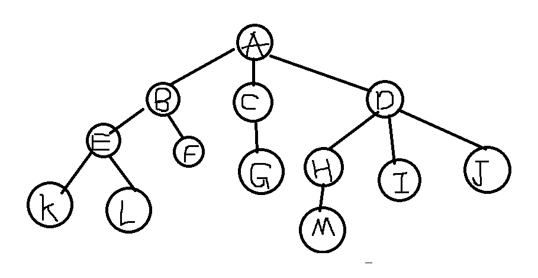
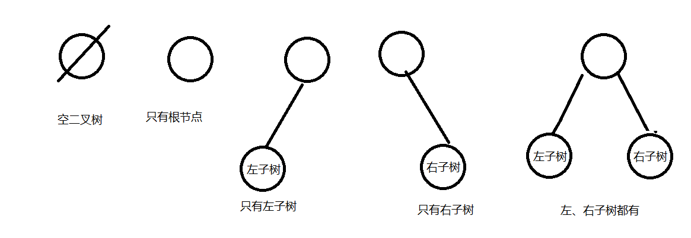
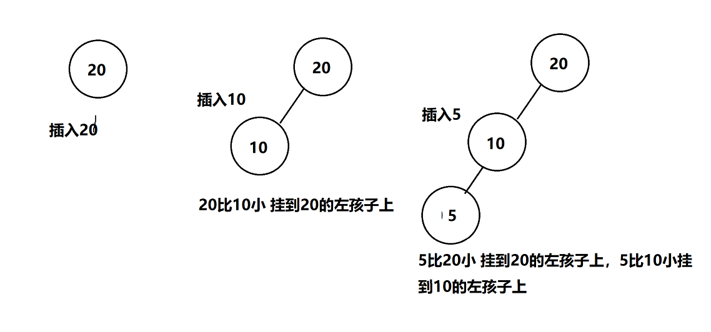
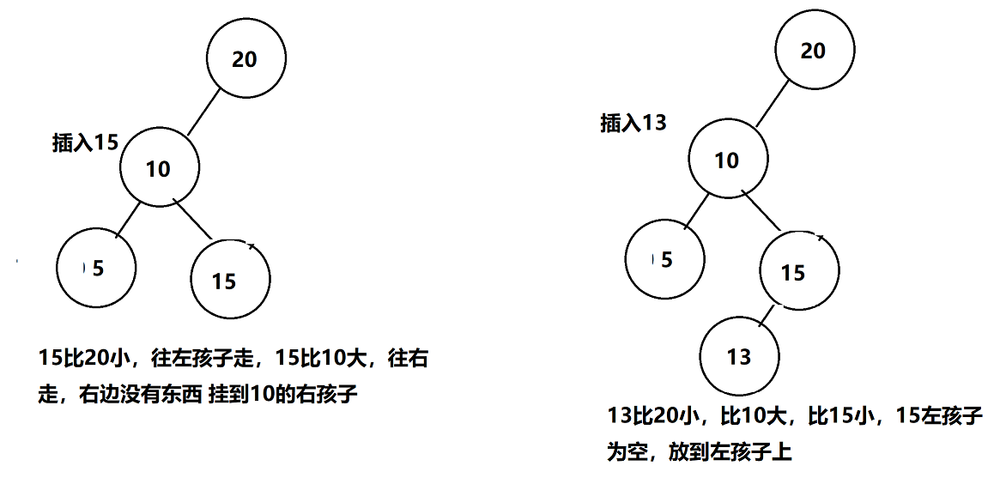
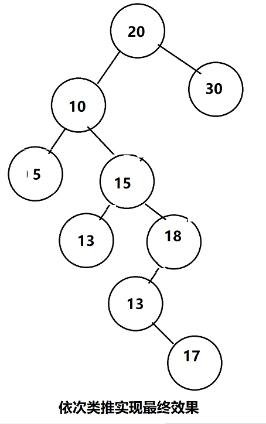
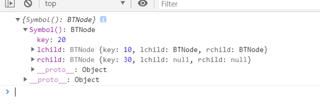
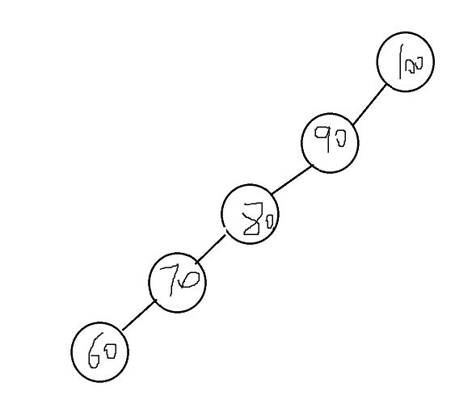

在使用javascript实现基本的数据结构中，练习了好几周，对基本的数据结构如 栈、队列、链表、集合、哈希表、树、图等内容进行了总结并且写了笔记和代码。
在 github中可以看到 点击查看，可以关注一下我哈。
文章对树了解的不多的人有点不友好，这里简单介绍（从书上抄下来）那些基本的一点概念吧。
看下面这个示意图

结点：A、B、C等都是结点，结点不仅包含数据元素，而且包含指向子树的分支。例如，A结点不仅包含数据元素A、还包含3个指向子树的指针。
结点的度：结点拥有的子树个数或者分支的个数，例如A结点有3棵子树，所以A结点的度为3.
树的度：树中各结点度的最大值。如例子中结点度最大为3（A、D结点）。最小为0（F、G、I、J、K、L、M），所以树的度为3。
叶子节点：又叫做终端节点，指度为0的节点，F、G、I、J、K、L、M节点都是叶子节点。
孩子：结点的子树的根，如A节点的孩子为B、C、D。
双亲：与孩子的定义对应，如B C D结点的双亲都是A。
兄弟：同一个双亲的孩子之间互为兄弟。如B、C、D互为兄弟，因为它们都是A节点的孩子。
祖先：从根到某节点的路径上的所有结点，都是这个节点的祖先。如K的祖先是A B E，因为从A到K的路径为 A---B---E--K。
子孙: 以某节点为根的子树中的所有结点，都是该结点的子孙。如D的子孙为H I J M。
层次：从根开始，根为第一层，根的孩子为第二层，根的孩子的孩子为第三层，以此类推。
树的高度（或者深度）：树中结点的最大层次，如例子中的树共有4层，所以高度为4.
理解了上面的树一些基本一些的概念后，我们来看一下什么是二叉树。
1）每个结点最多只有两棵子树，即二叉树中的节点的度只能为0、1、2
2) 子树有左右之分，不能颠倒。
以下二叉树的5中基本状态

我们会发现，二叉树中的存储结构一个是值，一个是左边有一个，右边有一个。他们分别叫左孩子/左子树 右孩子/右子树。
所以我们会很容易的写出来一个节点的构造函数。
1 // 树的结构
2 class BTNode {
3 constructor() {
4 this.key = key;
5 this.lchild = null;
6 this.rchild = null;
7 }
8 }
看一下定义
二叉排序树或者是空树，或者是满足以下性质的二叉树。
1) 若它的左子树不空，则左子树上的所有关键字的值均小于根关键字的值。
2）若它的右子树不空，则右子树上所有关键字的值均大于根关键字的值。
3）左右子树又是一棵二叉排序树。
假如要插入一堆数字，数字为 20 10 5 15 13 18 17 30



那么用代码如何实现呢？
1 let BST = (function () {
2
3 let ROOT = Symbol();
4
5 // 节点结构
6 let BTNode = class {
7 constructor(key) {
8 this.key = key;
9 this.lchild = null;
10 this.rchild = null;
11 }
12 }
13
14 // 递归插入节点
15 let recursionInsert = function (root, node) {
16 if (node.key < root.key) {
17 if (root.lchild) {
18 recursionInsert(root.lchild, node);
19 } else {
20 root.lchild = node;
21 }
22 } else {
23 if (root.rchild) {
24 recursionInsert(root.rchild, node);
25 } else {
26 root.rchild = node;
27 }
28 }
29 }
30
31 // 二叉搜索树类
32 return class {
33 constructor() {
34 this[ROOT] = null;
35 }
36
37 // 插入
38 insert(key) {
39 let node = new BTNode(key);
40 let root = this[ROOT];
41 if (!root) {
42 this[ROOT] = node;
43 return;
44 }
45 // 递归插入
46 recursionInsert(root, node);
47 }
48 }
49
50 })();
51
52
53 let bst = new BST();
54
55
56 bst.insert(20);
57 bst.insert(10);
58 bst.insert(5);
59 bst.insert(15);
60 bst.insert(13);
61 bst.insert(18);
62 bst.insert(17);
63 bst.insert(30);
64
65 console.log(bst);
在浏览器中一层一层的展开看看是否和我们的一样。

二叉树的遍历算法，二叉树的遍历就是按照某种规则将二叉树中的所有数据都访问一遍。
1 let BST = (function () {
2
3 let ROOT = Symbol();
4
5 // 节点结构
6 let BTNode = class {
7 constructor(key) {
8 this.key = key;
9 this.lchild = null;
10 this.rchild = null;
11 }
12 }
13
14 // 递归插入节点
15 let recursionInsert = function (root, node) {
16 if (node.key < root.key) {
17 if (root.lchild) {
18 recursionInsert(root.lchild, node);
19 } else {
20 root.lchild = node;
21 }
22 } else {
23 if (root.rchild) {
24 recursionInsert(root.rchild, node);
25 } else {
26 root.rchild = node;
27 }
28 }
29 };
30
31 // 用于中序遍历二叉树的方法
32 let inorderTraversal = function (root, arr) {
33 if (!root) return;
34 inorderTraversal(root.lchild, arr);
35 arr.push(root.key);
36 inorderTraversal(root.rchild, arr);
37 };
38
39 // 用于先序遍历的递归函数
40 let preOrderTraversal = function (root, arr) {
41 if (!root) return;
42 arr.push(root.key);
43 preOrderTraversal(root.lchild, arr);
44 preOrderTraversal(root.rchild, arr);
45 };
46
47 // 用于后续遍历的递归函数
48 let lastOrderTraversal = function (root, arr) {
49 if (!root) return;
50 lastOrderTraversal(root.lchild, arr);
51 lastOrderTraversal(root.rchild, arr);
52 arr.push(root.key);
53 };
54
55 // 二叉搜索树类
56 return class {
57 constructor() {
58 this[ROOT] = null;
59 }
60
61 // 插入
62 insert(key) {
63 let node = new BTNode(key);
64 let root = this[ROOT];
65 if (!root) {
66 this[ROOT] = node;
67 return;
68 }
69 // 递归插入
70 recursionInsert(root, node);
71 }
72
73
74 // 中序遍历二叉树
75 inorderTraversal() {
76 let arr = [];
77 inorderTraversal(this[ROOT], arr);
78 return arr;
79 }
80
81 // 先序遍历二叉树
82 preOrderTraversal() {
83 let arr = [];
84 preOrderTraversal(this[ROOT], arr);
85 return arr;
86 }
87
88 // 后续遍历
89 lastOrderTraversal() {
90 let arr = [];
91 lastOrderTraversal(this[ROOT], arr);
92 return arr;
93 }
94 }
95
96 })();
97
98
99 let bst = new BST();
100
101 bst.insert(20);
102 bst.insert(15);
103 bst.insert(7);
104 bst.insert(40);
105 bst.insert(30);
106 bst.insert(45);
107 bst.insert(50);
108
109
110 console.log(bst);
111
112
113 let a = bst.inorderTraversal();
114 let b = bst.preOrderTraversal();
115 let c = bst.lastOrderTraversal();
116
117 console.log(a);
118 console.log(b);
119 console.log(c);
广度优先遍历
// 广度优先遍历
breadthRirstSearch() {
// 初始化用于广度优先遍历的队列
let queue = new Queue();
console.log('根节点', this[ROOT]);
let arr = [];
let root = this[ROOT];
if (!root) return;
queue.enqueue(root);
while (queue.size()) {
let queueFirst = queue.dequeue();
arr.push(queueFirst.key);
queueFirst.lchild && queue.enqueue(queueFirst.lchild);
queueFirst.rchild && queue.enqueue(queueFirst.rchild);
}
return arr;
}
有的人可能会想到，关于二叉树深度优先遍历算法的非递归实现和递归实现，一个是用户自己定义栈，一个是系统栈，为什么用户自己定义的栈要比系统栈执行高效？
一个较为通俗的解释是：递归函数所申请的系统栈，是一个所有递归函数都通用的栈，对于二叉树深度优先遍历算法，系统栈除了记录访问过的节点信息之外，还有其他信息需要记录，以实现函数的递归调用，用户自己定义的栈仅保存了遍历所需的节点信息，是对遍历算法的一个针对性的设计，对于遍历算法来说，显然要比递归函数通用的系统栈更高，也就是一般情况下，专业的要比通用的要好一些。
然而在实际应用中不是这样的，如尾递归在很多机器上都会被优化为循环，因此递归函数不一定就比非递归函数执行效率低。
// 栈结构 用来辅助非递归遍历
class Stack {
constructor() {
this.items = [];
}
push(data) {
this.items.push(data);
}
pop() {
return this.items.pop();
}
peek() {
return this.items[this.items.length - 1];
}
size() {
return this.items.length;
}
}preOrderTraversal() {
console.log('先序遍历');
let root = this[ROOT];
// 初始化辅助遍历存储的栈
let stack = new Stack();
let arr = []; // 用于存储先序遍历的顺序
stack.push(root);
// 如果栈不为空 则一直走
while (stack.size()) {
let stackTop = stack.pop();
// 访问栈顶元素
arr.push(stackTop.key);
stackTop.rchild && stack.push(stackTop.rchild);
stackTop.lchild && stack.push(stackTop.lchild);
}
return arr;
}
// 中序遍历二叉树
inorderTraversal() {
// 初始化用于辅助排序的栈
let stack = new Stack;
let p = null; // 用于指向当前遍历到的元素
let arr = []; // 用户记录排序的顺序
p = this[ROOT];
while (stack.size() || p !== null) {
while (p !== null) {
stack.push(p);
p = p.lchild;
}
// 如果栈不为空 出栈
if (stack.size()) {
p = stack.pop();
arr.push(p.key);
p = p.rchild;
}
}
return arr;
}// 中序遍历二叉树
inorderTraversal() {
// 初始化用于辅助排序的栈
let stack = new Stack;
let p = null; // 用于指向当前遍历到的元素
let arr = []; // 用户记录排序的顺序
p = this[ROOT];
while (stack.size() || p !== null) {
while (p !== null) {
stack.push(p);
p = p.lchild;
}
// 如果栈不为空 出栈
if (stack.size()) {
p = stack.pop();
arr.push(p.key);
p = p.rchild;
}
}
return arr;
}
想一下，如果我们的插入顺序第一个数非常大，然后后面的数字都是越来越小的会有什么问题产生呢？

下一篇文章讲述这种问题的一个解决方案，平衡二叉树。